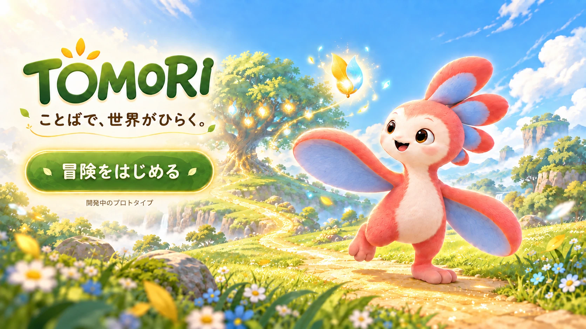

TOMORI ことばで、世界がひらく。

コンセプトビジュアル（開発中）
TOMORIとは
TOMORIは、子どもが見つけたものを写真に撮り、感じたことを言葉にしながら、自分だけの世界をひらいていく探究体験です。
道ばたの石、空の色、ふと目にとまった形。写真に撮った一枚から言葉が生まれます。その言葉で、冒険の世界が動きだします。
正解は、ひとつじゃない。
見つけ方も、感じ方も、その子らしさです。
体験の3ステップ
-
見つけて、撮る
身のまわりで「気になった」ものを、写真に撮ります。
-
言葉にする
写真を見ながら、感じたことや思いついたことを言葉にします。
-
世界がひらく
見つけた言葉によって、冒険の世界が少しずつ変わっていきます。
言葉にすると、
世界が変わる
写真から見つけた言葉は、TOMORIの世界を動かす「ことばのタネ」になります。
どんな言葉を見つけるかで、ひらく世界も変わります。同じ景色を見ても、生まれる言葉は一人ひとり違います。
実際のアプリ画面
開発中の画面です。今後変わる場合があります。
TOMORIの特徴
-
入り口は「気になった」
冒険のきっかけになるのは、子どもが自分で見つけたものです。
-
写真と言葉の両方を使う
撮って終わりにせず、感じたことを言葉にするところまでを体験の中心にしています。
-
自分だけの世界になる
見つけたものも、選んだ言葉も一人ひとり違います。だから、ひらく世界も一人ひとり違います。
開発中のプロトタイプです
TOMORIは現在開発中のプロトタイプです。画面や機能、キャラクターのデザインは今後変更される場合があります。
基本情報
- 名称
- TOMORI
- 内容
- 写真と言葉で探究する体験
- 状態
- 開発中のプロトタイプ
- 製作者
- こまたりゅうと